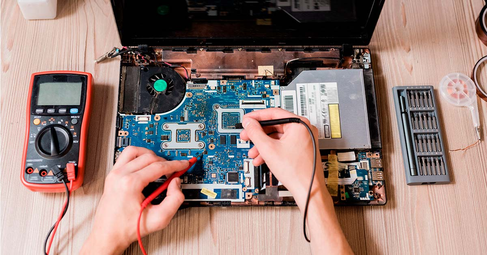
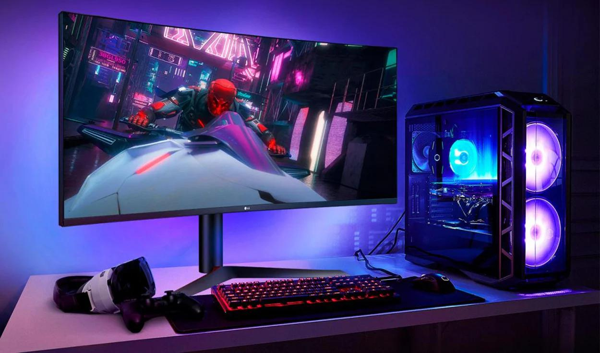

Solution UY
La Solucion Informática
Reparacion de equipos
En nuestra empresa, nos especializamos en ofrecer un servicio completo de reparación de computadoras, enfocado en la satisfacción y tranquilidad de nuestros clientes. Contamos con un equipo profesional capacitado para solucionar cualquier problema que presente tu equipo, ya sea en hardware o software. Realizamos limpiezas profundas para eliminar polvo y suciedad acumulada que puedan afectar el rendimiento y la vida útil de tu computadora. Además, abordamos reparaciones electrónicas precisas, diagnosticando y solucionando problemas en componentes internos como la placa base, la fuente de alimentación o el sistema de refrigeración. También ofrecemos cambios de partes como discos duros, memorias RAM, tarjetas gráficas y otros componentes, garantizando el uso de repuestos de alta calidad y compatibles con tu equipo. Nos destacamos por brindar un servicio personalizado y eficiente, adaptado a las necesidades de cada cliente. Ya sea que necesites una simple limpieza o una reparación avanzada, nos aseguramos de que tu computadora vuelva a funcionar como el primer día. Tu equipo está en las mejores manos.
Computadoras a medida
En nuestra empresa, ofrecemos un servicio especializado de armado de computadoras personalizadas, adaptado a las necesidades y preferencias de cada usuario. Ya sea que busques un equipo para trabajar, estudiar, diseñar o jugar, te ayudamos a seleccionar los componentes ideales para obtener el máximo rendimiento y durabilidad. Analizamos tus requerimientos y presupuesto para recomendarte las mejores opciones en procesadores, tarjetas gráficas, memorias RAM, discos duros y otros componentes. Nuestro objetivo es crear una computadora que no solo cumpla con tus expectativas, sino que las supere en términos de potencia y eficiencia. Cada equipo es ensamblado con el mayor cuidado y atención al detalle, asegurándonos de que todos los componentes funcionen en perfecta armonía. Además, realizamos pruebas exhaustivas de rendimiento y estabilidad para que puedas disfrutar de un sistema confiable desde el primer encendido. Con nuestro servicio de armado a medida, obtendrás una computadora única, diseñada específicamente para ti, con un rendimiento óptimo que se adapta a tus necesidades presentes y futuras.
